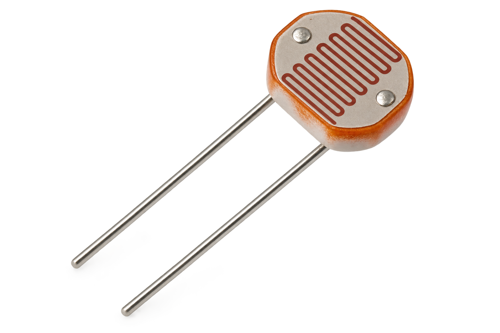

Automatic_Light_Direction_Indication.ino

Automatic Light Direction Indication

To demonstrate automatic light direction indication using three simulated light-intensity values and a servo motor controlled by Arduino UNO.
The system compares left, center and right values and rotates the servo toward the direction with the highest value.
Automatic Light Direction Indication demonstrates how Arduino UNO can compare three light-intensity values and rotate a servo motor accordingly.
The circuit includes three LDR sensing circuits representing the left, center and right directions.
The existing Arduino program generates simulated light-intensity readings using the random() function every two seconds.
Arduino compares these readings and identifies the direction having the highest value.
The servo motor moves smoothly toward 30° for left, 90° for center, or 150° for right.

Main controller used for comparing light values and controlling the servo.

Represents left, center and right light sensing circuits.

Forms voltage-divider circuits with the LDRs.

Indicates the selected light direction through angular movement.

Used to assemble the LDR voltage-divider circuits.

Connects the Arduino, LDR circuits and servo motor.
| Component | Connection | Arduino Pin |
|---|---|---|
| Left LDR | Voltage-divider output | A0 |
| Center LDR | Voltage-divider output | A1 |
| Right LDR | Voltage-divider output | A2 |
| Each LDR | First terminal | 5V |
| Each 10kΩ Resistor | From analog input node | GND |
| Servo Wire | Connection |
|---|---|
| Signal (Yellow/Orange) | Arduino D9 |
| VCC (Red) | Suitable regulated 5V |
| GND (Brown/Black) | Common GND |
Use a suitable regulated 5V servo supply if required. Its ground must be connected to Arduino GND.
These LDR connections describe the physical circuit. The original sketch uses simulated values instead of analogRead().

The program generates three simulated light-intensity values representing the left, center and right directions.
Arduino compares the simulated values using if and else-if conditions.
| Strongest Direction | Servo Angle |
|---|---|
| Left | 30° |
| Center | 90° |
| Right | 150° |
Instead of immediately jumping to the target angle, the Arduino increases or decreases the current angle one degree at a time.
A 15-millisecond delay is used between movement commands, creating a gradual rotation.
Arduino Experiment · Code Review
Automatic Light Direction Indication · Select a step to understand the complete Arduino program.
Choose a step. The matching code lines will automatically highlight and scroll into view.
Three LDR circuits are connected to analog pins A0, A1 and A2.
However, the original program uses random() to simulate readings.
Actual LDR measurements would require analogRead().
The servo uses three target positions:
The program changes the servo position gradually using one-degree steps.
Try it: Open Serial Monitor at 9600 baud. Observe how the strongest simulated light direction changes and how the servo follows the selected angle.
After uploading the program, the servo initializes at 90°.
Every two seconds, Arduino generates new simulated light-intensity values from 0 to 1023.
The values are compared to identify the strongest direction.
| Selected Direction | Servo Target |
|---|---|
| LEFT | 30° |
| CENTER | 90° |
| RIGHT | 150° |
New Light Intensity Values: Left LDR: 800 Center LDR: 350 Right LDR: 210 Strongest Light: LEFT Target Servo Angle: 30 -----------------------------------
The displayed numbers vary because they are generated randomly by the program.
The Automatic Light Direction Indication experiment demonstrates comparison of three simulated light-intensity values and directional servo control.
Arduino identifies the largest simulated value and smoothly moves the servo toward 30°, 90° or 150°.
The existing program does not read actual LDR sensor values.